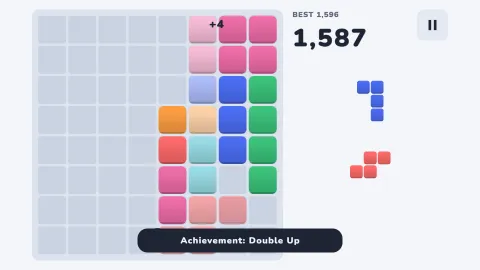
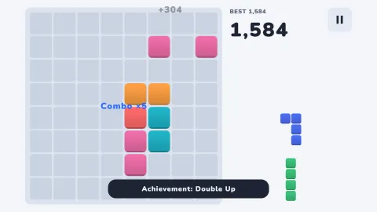
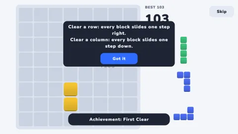
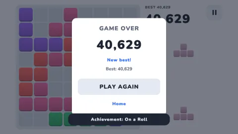
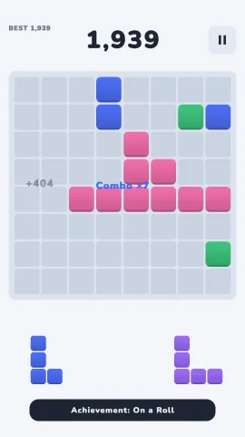
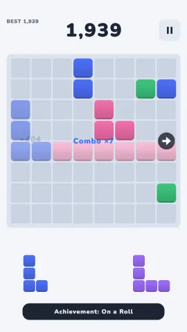
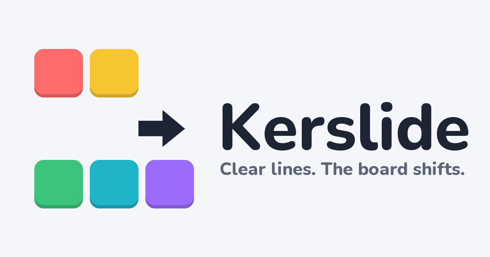
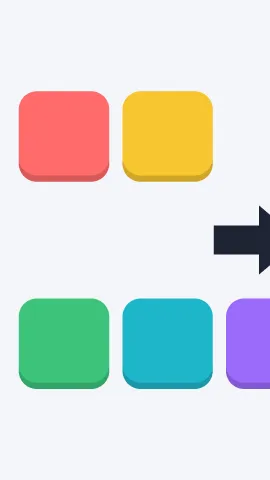

Press kit
Kerslide is a calm block puzzle with one twist: every line you clear shifts the whole board. Free to play in the browser at kerslide.com/play.
Factsheet
| Title | Kerslide |
|---|---|
| Developer / publisher | Kerslide (solo developer) |
| Released | 27 September 2026 (web) |
| Play | kerslide.com/play · itch.io · Game Jolt |
| Platforms | Web browser (phone, tablet, desktop). iOS, Android and Steam versions are in preparation. |
| Price | Free |
| Genre | Puzzle, casual, single player |
| Languages | English, German, Spanish, French, Italian, Brazilian Portuguese, Polish, Turkish, Indonesian, Vietnamese, Russian, Japanese, Korean, Simplified Chinese, Traditional Chinese |
| Download size (web) | About 4 MB before the first move; music streams in afterwards |
| Engine | Unity 6 |
| Press contact | support@kerslide.com |
Description
Short (1 line): A calm block puzzle where every line you clear shifts the whole board.
Long: Kerslide is a simple block puzzle with one memorable rule: CLEAR → SHIFT. Drag pieces onto an 8×8 board. Fill a row or a column and it clears — then every remaining block slides one step: right when you clear a row, down when you clear a column. Blocks pushed off the edge are gone. That one rule turns a familiar game into a planning puzzle: a clear can open space, break the line you were building, or set up your next move. Before you drop a piece, the board shows exactly which lines will clear and which way everything will move.
Features
- One new rule: clearing a row shifts the board right, clearing a column shifts it down
- Live preview of every clear and shift before you drop a piece
- No timers, no energy, no lives — play at your own pace
- Daily challenge: the same start for everyone, every day
- Stats and achievements
- Colorblind-friendly shapes, high-contrast mode, reduced motion, larger text
- No account needed; progress stays on the device
Videos
Real gameplay captured from the web version at normal speed. Captions, an end card and the game's own music and sound effects were added in editing.
Screenshots
Real game screens. Click for full resolution PNG.












Logo and icon






Colors: blue #2F6BFF, ink #1D2433, background #F4F6FA. Font: Nunito Bold (SIL Open Font License).
Videos, streams and reviews
You are welcome to stream Kerslide and to publish and monetize videos of it — no need to ask. A link to kerslide.com in the description is appreciated.
Credits
- Development: Kerslide
- Music: "November Snow" by The Cynic Project and "Snowfall" by Kistol (both CC0, via OpenGameArt)
- Sound effects: Kenney (CC0)
Contact
Interviews, review questions or custom assets: support@kerslide.com. Replies usually within 48 hours.